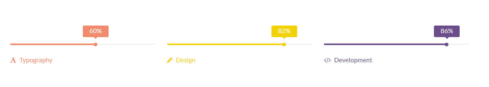

Proyectos
Nuestros proyectos


Clean.Slick.Pixel Perfect
lldy is a great one-page theme, perfect for developers and designers but also for someone who just wants
a new website for his business. Try it now!
It is an amazng one-page theme with great features that offers an incredible experience. It is easy to install, make changes, adapt for your business. A modern design with clean lines and styling for a wide variety of content, exactly how a business design should be. You can add as many images as you want to the main header area and turn them into slider.


Awesome theme with great design and awesome support. If you don’t know how to code your own WordPress theme, but you still want a good-looking website for your business, Illdy might be exactly what you need. It is a slick theme with a lot of of features to choose from. You can customize whatever section you want and you can rest assure that no matter what device your website is viewed on – it looks great.